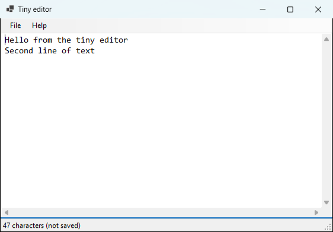

A small text editor
Build a real tool in about eighty lines — a menu, a text area that fills the window, a status bar, open and save with file dialogs, and the rule for the order of docked controls.
What you will learn#
- menus with
uiMenu, - a multi-line
TextBoxthat fills the window (Dock), - a
StatusStrip, - the open and save dialogs,
- reacting to a change with an event,
- a layout rule: add the filling control first.
The program#
# a small text editor - menus, a status bar, files and a message when you quit with unsaved text
load "dotnet.ring"
using {
"System"
"System.IO"
"System.Drawing"
"System.Windows.Forms"
}
oForm = ""
oEditor = ""
oStatus = ""
cFileName = ""
lChanged = False
func main
oForm = uiForm("Tiny editor",560,360)
# The editor fills the window. Add the control that fills FIRST: Windows Forms docks the controls added later
# (the menu and the status bar) before it, so the editor gets what is left.
oEditor = uiMemo(oForm,0,0,560,338)
oEditor {
Dock = "Fill"
Font = new Font("Consolas",11)
setTextChangedEvent("textChanged()")
}
# A menu is a list: [title, [ [item, code], ... ]] ("-" is a separator)
uiMenu(oForm,[
["File",[["New","newFile()"],["Open...","openFile()"],["Save","saveFile()"],["-",""],["Exit","oForm.Close()"]]],
["Help",[["About","uiMessage('Tiny editor - made with Ring and .NET','About')"]]]
])
# A status bar at the bottom
oStatus = new StatusStrip()
oLabel = new ToolStripStatusLabel()
oLabel.Text = "Ready"
oStatus.Items.Add(oLabel)
oForm.Controls.Add(oStatus)
uiRun(oForm)
func textChanged
lChanged = True
oStatus.Items.Item(0).Text = "" + len(oEditor.Text) + " characters (not saved)"
func newFile
oEditor.Text = ""
cFileName = ""
lChanged = False
oForm.Text = "Tiny editor"
func openFile
cChosen = uiOpenFileName("Open a text file","Text files|*.txt|All files|*.*")
if cChosen = ""
return
ok
loadFile(cChosen)
func loadFile cPath
cContent = new File().ReadAllText(cPath)
oEditor.Text = cContent
cFileName = cPath
lChanged = False
cShortName = new Path().GetFileName(cPath)
oForm.Text = "Tiny editor - " + cShortName
oStatus.Items.Item(0).Text = "Opened " + cPath
func saveFile
if cFileName = ""
cFileName = uiSaveFileName("Save the text","Text files|*.txt|All files|*.*")
if cFileName = ""
return
ok
ok
new File().WriteAllText([ :path = cFileName, :contents = oEditor.Text ])
lChanged = False
cShortName = new Path().GetFileName(cFileName)
oForm.Text = "Tiny editor - " + cShortName
oStatus.Items.Item(0).Text = "Saved " + cFileName
How it works#
Menus#
uiMenu(oForm, aMenus) builds the menu bar from a list: [title, [ [item, code], ... ]]. Each item has the Ring code to run when it is chosen; "-" is a separator line.
Filling the window: Dock#
Dock = "Fill" makes a control take all the free space of its parent; other values are "Top", "Bottom", "Left", "Right". When the window is resized the control follows.
Order matters. Windows Forms places docked controls starting with the last added. If you add the menu first and the filling editor after it, the editor is placed first and fills everything — under the menu and the status bar, hiding its first line. The fix: add the control that fills first, then the menu and the status bar. The program does that.
A status bar#
A StatusStrip holds ToolStripStatusLabel items. Change a label's Text to show information: the number of characters, or "Saved ...".
React to changes#
setTextChangedEvent("textChanged()") runs textChanged() every time the text changes. The function records that the text is not saved and updates the status bar.
Open and save#
uiOpenFileName(title, filter) and uiSaveFileName(title, filter) show the standard dialogs and return the chosen path (or "" if the user cancels). The filter is "Text files|*.txt|All files|*.*": pairs of a description and a pattern. File.ReadAllText and File.WriteAllText do the actual work.
The test#
selfTest types into the editor, saves to a temporary file, creates a new document, opens the file again and checks each step. Because the real dialogs would wait for a person, the test calls loadFile and saveFile with a known file name.
The checks of this program are in a separate file, selftest/ch10_editor.ring:
# the checks of ch10_editor.ring: run with ring ch10_editor.ring --selftest (the program loads this file and runs selfTest() once its window is shown)
func selfTest
oEditor.Text = "Hello from the test"
dnAssert("the text changed",lChanged,True)
cTemp = new Path().Combine([new Path().GetTempPath(),"ringdotnet_editor.txt"])
cFileName = cTemp
saveFile()
dnAssert("saved",new File().ReadAllText(cTemp),"Hello from the test")
dnAssert("no longer changed",lChanged,False)
newFile()
dnAssert("new file is empty",oEditor.Text,"")
loadFile(cTemp)
dnAssert("opened again",oEditor.Text,"Hello from the test")
new File().Delete(cTemp)What you learned#
| Idea | Example |
|---|---|
| a menu from a list | uiMenu(oForm, [...]) |
| fill the window | Dock = "Fill" |
| add the filling control first | editor, then menu, then status bar |
| status information | StatusStrip |
| file dialogs | uiOpenFileName, uiSaveFileName |
| react to changes | setTextChangedEvent |
Exercises#
- Warn before New or Exit when the text is not saved (
uiAsk). - Add Edit → Select all (
oEditor.SelectAll()) and Copy (oEditor.Copy()). - Show the cursor line number in the status bar (
oEditor.GetLineFromCharIndex(oEditor.SelectionStart)). - Add a Font menu item that opens a
FontDialogand changesoEditor.Font.
The full-size version of this program is the Notepad application.